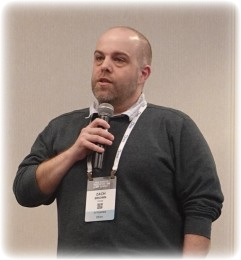

A distributed filesystem for archival systems: ngnfs
A new filesystem was the topic of a session led by Zach Brown at
the 2025 Linux Storage, Filesystem, Memory Management, and BPF Summit
(LSFMM+BPF). The ngnfs
filesystem is not a "next generation" NFS, as might be guessed from the
name; Brown said that he did not think about that linkage
("I hate naming so much
") until it was pointed out to him by Chuck
Lever in an email. It is, instead, a filesystem for enormous data sets
that are mostly stored offline.
He works for Versity, which has an "archival software stack
" that is
used for products storing "really big data sets with a ton of files that
have mostly been tiered off to archive
". That means there are no file
contents that are online any longer, which is the weirdest thing for a
filesystem developer to wrap their head around, he said. The filesystem is
metadata-heavy, with the archival agent making mostly metadata changes to
extended attributes (xattrs) that describe where the file contents are
currently stored. That includes information like what tier the data is in
and what its location is on the media (e.g. tape).
The archive tiers have "large aggregate bandwidth
" that would
swamp a single host that was driving the system. So it is a distributed,
POSIX filesystem that is, for example, "feeding eight machines that all
have a bunch of attached tape drives
". That is the context for the
filesystem, Brown said: "a whole bunch of files, mostly metadata churn, but,
annoyingly, as the file contents flow around, we need a bunch of aggregate
bandwidth so it's not just one node doing all this
".
He called the filesystem "engine fs" and said that the name had come from "next generation" when he began working on it; he used "ngn" and always pronounced it as "engine". That left him with a blind spot that NFS was embedded in the name, he said with a laugh.

His experience with GlusterFS, ocfs2, and other distributed filesystems has
led him to try to remove the choke points (or bottlenecks) that he has
observed in those other filesystems. The idea with ngnfs is to minimize
the path between the two required elements: the application endpoint and
the persistent-storage endpoint. Many competing systems have an enormous
amount of other "stuff that you flow through to do all this work
"
for things like locking; it makes those systems hard to understand and to
reason about, he said.
There are three "big ideas
" behind ngnfs, though none of them are
revolutionary; "this is just my brain solving this set of constraints in
the way that it finds least awful
", Brown said with a chuckle. There
are per-device user-space servers, so that each archive device in the fleet
has a processor in front of it. There is a network protocol that the
servers speak to network endpoints. Finally, there is a client that is
"building POSIX behavior by doing reads and writes across the
blocks
" provided by the servers.
All of that should sound familiar, he said, "but it's how we build the
protocol and the behavior of the client as it gets its sets of blocks that makes
this a little different
"
The network protocol is pretty minimal; there is "almost nothing
there
" in the Git tree. The protocol is block-oriented, with small,
fixed-sized blocks and the expected read and write operations. Writing is
a little more complicated because it is doing distributed writes across all
of the servers. The read and write operations have additional
cache-coherency information so that readers can, for example, specify that
they will be writing a block as well; there are no higher-level locks for
operations such as rename, because the locks are at the block level. This
cache-coherency protocol is "kind of the heart of why this is
interesting
".
Because there is an intelligent endpoint on the server side, it can help
make some decisions for clients. So, not all of the operations are simply
reads and writes; there are some "richer commands that let it [the
server] explore
the blocks and make choices for you
". He didn't want to get too deep into
details, but block allocation is an area requiring server intelligence.
The client is the most interesting piece to him. The key thing to
understand about the client "is the way we make these block
modifications safe
". For most kernel filesystems, there is a mutex
that is protecting a set of blocks, so those that are protected can be read
or written, but ngnfs has done away with those mutexes. Instead, the
blocks are assembled into transaction objects; if they are being modified,
the client has write access to all of the blocks, so they can be dirtied in
memory; "when someone else needs them, they'll all leave as an atomic
write
". Reads also use the transaction objects, but there is no need
to track dirty blocks.
Brown realized that attendees would immediately be thinking about ABBA
deadlocks; that is what the client code is set up to avoid. The client
attempts to get block access in block-traversal order, but that order can change,
so the client is structured to use "trylocks", which attempt to obtain a lock
without blocking if it cannot be acquired.
If that fails, the client has
to unwind and reacquire the access to the needed blocks. There is overhead
in doing that, he said, but by localizing it in the client, the
block-granular locking scheme can be used, so more widespread locking can be
avoided. Writeback caching is "the big motivation for doing this
";
the classic example is an untar, which just dirties a bunch of blocks in
memory and "you don't have round trips for every logical operation
".
Josef Bacik asked about how ngnfs handles its metadata-heavy workload; he
has seen people struggle with those kinds of workloads on other
filesystems, adding metadata servers and other complexity. Brown said that
it all comes down to blocks. It will seem familiar to filesystem
developers if they look at it as the "dumbest, dirt-stupid
block filesystem, [then] spray those blocks over the network with a
coherent protocol
". Those blocks include everything: inode blocks,
indirect blocks, directory-entry (dirent) blocks, extended attributes, and
so on.
Christian Brauner asked if the client already existed. Brown said "sort
of
"; in the Git repository, there is a debugfs network client that has
some thin wrappers around virtual filesystem (VFS) operations for file
creation, rename, and things like that. There is also a server that does
the block I/O.
Jeff Layton asked about file locking, which is not currently implemented,
Brown said. There have been no requests for it, but if it is requested, it
would be done in a block-centric manner. The applications that are being
used do not fight over files, so there is no real need for locking, he
thinks. "Until they do and then you're going to have to deal with
it
", Layton said and Brown acknowledged.
Brauner asked if there were any VFS changes that were needed for ngnfs. Brown said that there were not; all of the transactions, trylocks, and retries would be handled in the client implementation.
Beyond the block-granular contention, which is helpful in naturally
avoiding the need for higher-level locking, he is most excited by the
online-repair possibilities offered by ngnfs, Brown said as he was wrapping
up. Clients can do "incoherent reads
", where the blocks may be
stale or undergoing modification, but the repair process can examine
whatever the server has available. If the data is inconsistent in some
way, an entire range can be rewritten with a compare-and-exchange
operation; the server may recognize that the blocks have changed and
require the repair operation to get new blocks. The whole repair process
can be done in parallel on multiple clients to constantly ensure that the
blocks stay consistent.
| Index entries for this article | |
|---|---|
| Kernel | Filesystems |
| Conference | Storage, Filesystem, Memory-Management and BPF Summit/2025 |
Posted Jun 21, 2025 11:53 UTC (Sat)
by gmatht (guest, #58961)
[Link] (3 responses)
Posted Jun 21, 2025 14:12 UTC (Sat)
by jake (editor, #205)
[Link]
jake
Posted Jun 25, 2025 17:17 UTC (Wed)
by ricwheeler (subscriber, #4980)
[Link] (1 responses)
Posted Jun 25, 2025 17:29 UTC (Wed)
by ricwheeler (subscriber, #4980)
[Link]
We do have a mailing list as well:
https://lists.infradead.org/mailman/listinfo/ngnfs-devel
Need for more written documentation noted!
It seems like this LWN article pretty much is the documentation for this project. The README just says:
This is the repository for the userspace component of ngnfs ("engine
FS"), a storage system in early development.
Further bulletins as events warrant.
See the docs/ directory for more information on how to run and
contribute to ngnfs.
This article is the documentation.
The docs directory just has one file that gives a couple of one liners and describes what is in each source directory.
This article is the documentation.
This article is the documentation.
This article is the documentation.